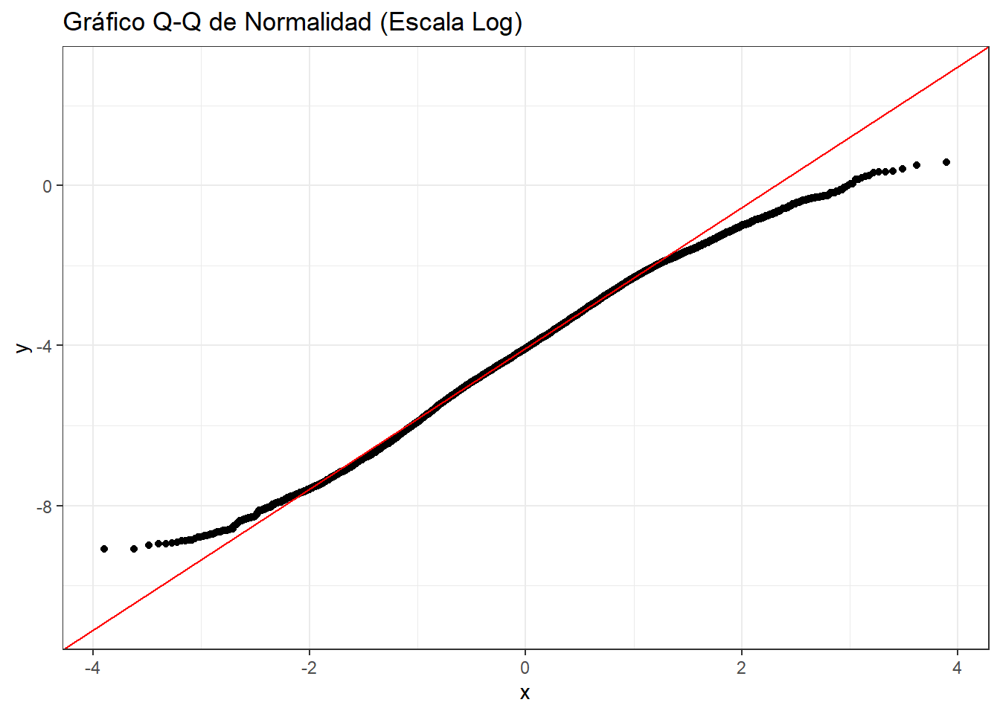

2 Datos
2.1 |Carga de datos
##
## Adjuntando el paquete: 'dplyr'## The following objects are masked from 'package:stats':
##
## filter, lag## The following objects are masked from 'package:base':
##
## intersect, setdiff, setequal, union## Rows: 10239 Columns: 11## ── Column specification ───────────────────────────────────────────────────────────────────────
## Delimiter: ","
## chr (1): origen
## dbl (10): Hypocenter Depth (km), Magnitude, Rrup_OpenQuake, Soil_Class, Tmax, Seismic Latit...
##
## ℹ Use `spec()` to retrieve the full column specification for this data.
## ℹ Specify the column types or set `show_col_types = FALSE` to quiet this message.## # A tibble: 6 × 11
## `Hypocenter Depth (km)` Magnitude Rrup_OpenQuake Soil_Class Tmax origen `Seismic Latitude`
## <dbl> <dbl> <dbl> <dbl> <dbl> <chr> <dbl>
## 1 7.21 3.4 2.50 2 0.808 NGAW2 37.1
## 2 7.21 3.4 3.30 3 1.08 NGAW2 37.1
## 3 7.21 3.4 3.55 3 1.08 NGAW2 37.1
## 4 7.21 3.4 3.00 3 1.33 NGAW2 37.1
## 5 8.47 3.4 2.53 3 1.67 NGAW2 36.6
## 6 8.47 3.4 3.36 2 1.01 NGAW2 36.6
## # ℹ 4 more variables: `Seismic Longitude` <dbl>, `Station Latitude` <dbl>,
## # `Station Longitude` <dbl>, T_0.01_RotD50 <dbl>Aquí se observa el número de observaciones y el tipo de variables (categóricas y numéricas). Esto permite entender cómo se encuentra estructurado el conjunto de datos. Variables categóricas: - Soil_Class - origen
Variables numéricas: - Magnitude - Rrup_OpenQuake - Hypocenter Depth (km) - T_0.01_RotD50 - Seismic Latitude - Seismic Longitude
##Transformación a Escala Real
datos <- datos %>%
mutate(
Rrup_real = exp(Rrup_OpenQuake),
Acc_real = exp(T_0.01_RotD50)
)
summary(datos$Rrup_real)## Min. 1st Qu. Median Mean 3rd Qu. Max.
## 0.05 34.93 71.48 105.48 145.28 1532.66## Min. 1st Qu. Median Mean 3rd Qu. Max.
## 0.0001128 0.0052669 0.0169618 0.0552774 0.0566147 1.7931580Dado que las variables Rrup_OpenQuake y T_0.01_RotD50 se encuentran en escala logarítmica natural, se procede a transformarlas a su escala física real utilizando la función exponencial.
##Prueba de Normalidad
# Q-Q Plot
ggplot(datos, aes(sample = T_0.01_RotD50)) +
stat_qq() +
stat_qq_line(color = "red") +
labs(title = "Gráfico Q-Q de Normalidad (Escala Log)") +
theme_bw()
Dado el gran tamaño muestral, se evalúa normalidad mediante inspección gráfica.
##Prueba de Homocedasticidad (Homogeneidad de Varianza)
## Cargando paquete requerido: carData##
## Adjuntando el paquete: 'car'## The following object is masked from 'package:dplyr':
##
## recode## Levene's Test for Homogeneity of Variance (center = median)
## Df F value Pr(>F)
## group 4 31.792 < 2.2e-16 ***
## 10234
## ---
## Signif. codes: 0 '***' 0.001 '**' 0.01 '*' 0.05 '.' 0.1 ' ' 1La prueba de Levene indica evidencia estadística de heterocedasticidad entre clases de suelo (p < 0.05).
####Correlacion
##
## Pearson's product-moment correlation
##
## data: datos$Rrup_OpenQuake and datos$T_0.01_RotD50
## t = -48.189, df = 10237, p-value < 2.2e-16
## alternative hypothesis: true correlation is not equal to 0
## 95 percent confidence interval:
## -0.4456573 -0.4140782
## sample estimates:
## cor
## -0.4299992El coeficiente de correlación de Pearson entre la distancia logarítmica a la ruptura (Rrup_OpenQuake) y la aceleración logarítmica (T_0.01_RotD50) es r = -0.43, indicando una relación lineal negativa moderada.
El intervalo de confianza al 95% (-0.446, -0.414) confirma que la correlación es estadísticamente diferente de cero.
El p-valor < 0.001 sugiere evidencia estadística contundente de asociación lineal.
Esta relación negativa es consistente con el fenómeno de atenuación sísmica: a mayor distancia a la fuente, menor aceleración registrada.